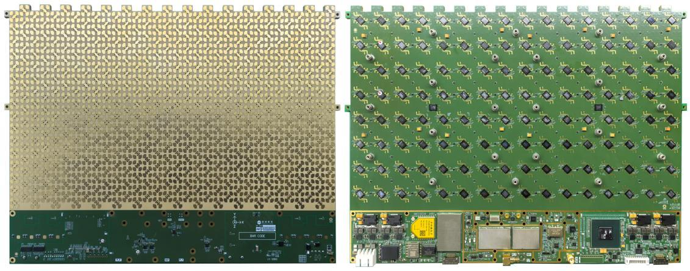
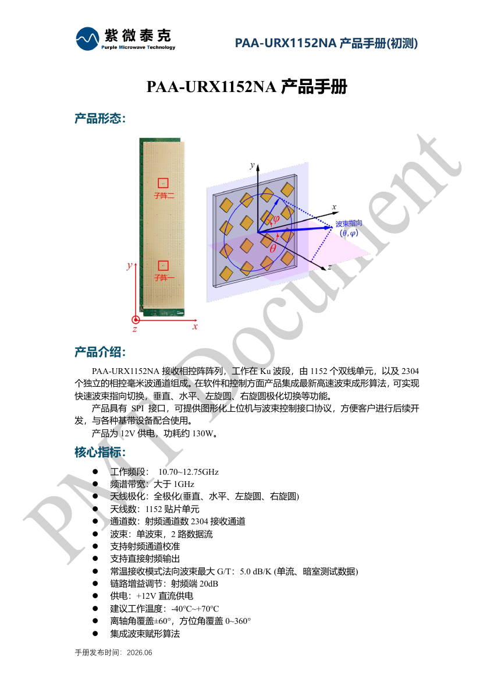

Ku 频段收发与接收组件
面向不同阵列规模与数据流需求，提供全极化收发组件和双路数据流接收组件。按型号查看技术规格与对应产品手册。

PAA-UBX512CA
全极化 Ku 频段 512 单元相控阵天线收发组件
集成天线阵列、变频模组、中频处理模块、姿态感知模块和导航模块。支持快速波束指向与极化切换，可通过关闭通道调整口径与功耗，并支持阵列扩展拼接。
- 发射工作频段
- 13.75–14.50 GHz
- 接收工作频段
- 10.70–12.75 GHz
- 天线与射频通道
- 512 个双极化天线单元；1024 个发射/接收通道
- 接收对空 G/T
- ≥4 dB/K11.7 GHz；暗室噪声温度 290 K，按对空噪声温度 50 K 修正，修正因子 +1.8 dB
更多技术规格
- 波束与数据流
- 单波束，单路数据流
- 天线极化
- 任意线极化、正旋圆极化、反旋圆极化，可实时切换
- 发射中频频段
- 低轨 0.95–1.70 GHz；高轨 4.0 GHz
- 接收中频频段
- 0.95–2.15 GHz
- 发射输入 P1dB 功率
- −5–0 dBm1.3 GHz
- 波束切换时间
- <60 μs
- 控制协议
- RS422、TCP/IP、UDP、SPI
- 供电电压
- 24 V DC（典型），18–36 V
- 建议工作温度
- −40℃ 至 +70℃
- 定位与姿态
- 北斗/GPS 双模导航、双天线定位、姿态感知与自动对准
- 射频与参考
- 支持射频通道校准、射频直接输入、与基带系统共参考信号

PAA-URX1152NA
全极化 Ku 频段 1152 单元 2 流相控阵天线接收组件
由 1152 个双线极化单元和 2304 个独立相控毫米波接收通道组成，支持单波束双路数据流、快速波束指向和垂直、水平、左旋圆及右旋圆极化切换。提供 SPI 接口、图形化上位机与波束控制接口协议。
- 工作频段
- 10.70–12.75 GHz
- 天线与接收通道
- 1152 个贴片单元；2304 个接收通道
- 波束与数据流
- 单波束，2 路数据流
- 接收 G/T
- 5.0 dB/K常温法向波束最大值；单流、暗室测试数据（初测）
更多技术规格
- 频谱带宽
- >1 GHz
- 天线极化
- 全极化：垂直、水平、左旋圆、右旋圆
- 射频输出频率
- 10.70–12.75 GHz
- 扫描覆盖
- 离轴角 ±60°；方位角 0–360°
- 波束切换时间
- <1.5 ms实时波束赋形计算，精度到0.1°
- 控制协议
- SPI
- 供电电压
- +12 V DC
- 工作功耗
- 120 W（最小）／135 W（典型）／150 W（最大）
- 建议工作温度
- −40℃ 至 +70℃
- 尺寸
- 210.6 × 888 × 4.75 mm
- 接收增益
- 47.5 dB（单通道）；99 dB（全阵面、驱动全开）典型值
- 系统噪声系数
- 2 dB典型值